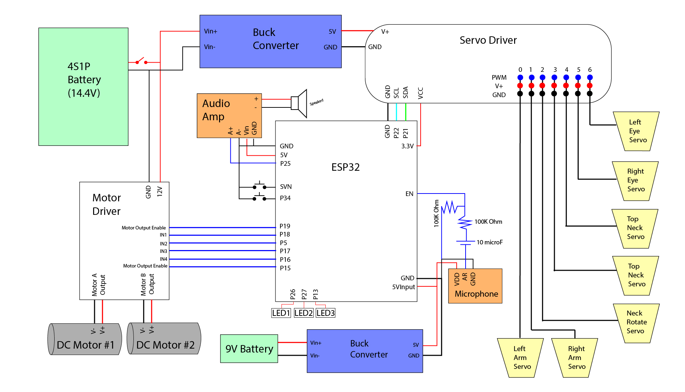

Electrical
Schematic

Component Details
- DC Motors (x2): Wall-E is moderately heavy. After all, he is a trash compactor. We therefore required motors that were able to move Wall-E with precision and through possibly rough terrain. This meant selecting motors with high torque. We chose our motors because of the high amount of torque it provided at a manageable price range.
- PWM Servo Driver: Wall-E has a lot of moving components. After drafting a basic design of our loveable robot, we realized that we would require a minimum of five (maximum of 7+) servo drivers to build our MVP. We therefore required a board capable of driving all of these motors simultaneously as efficiently and precisely as possible. This Servo Driver board fulfills both requirements of providing adequate pin allocation and adjustable PWM frequency.
- Micro Servo Motors (x5): We used these smaller servo motors to drive the more intricate connections in Wall-E’s neck/head. We initially attempted to use full-size servos, but found that Wall-E would then become the size of a small toddler if fully assembled.
- Standard Servo Motor (x2): These full-sized servo motors manipulate both arms of Wall-E. Since the motors are stored inside of Wall-E’s body, we did not have to think much about space conservation. Thus, we were able to use the cheaper, more widely available regular servo motors.
- Microphone: A basic and small microphone mounted to the front of Wall-E to detect a provided BPM for Wall-E to dance to.
- Audio Amplifier: Choosing a small and simple speaker provided an unexpected challenge: we could not effectively transmit the sound that we wanted for Wall-E. We therefore invested in an audio amplifier to better hear what Wall-E is saying.
- ESP32: ESP32s are advantageous compared to Arduino Unos due to their increased memory capacity and more versatile pins. Initially, we chose a different ESP32 board to use than the one selected. While testing, we discovered that our original ESP32 was not capable of audio processing. We quickly found a replacement and continued our work.
- Speaker: An extremely basic and small speaker that can be used to play sounds from Wall-E.
- DC Motor Driver: This motor driver is an intermediary between the motors and the control board (ESP32). The motors require a higher current when compared to the ESP32, and therefore need a board to mediate the current.
- Buck Converter (x2): Since we are utilizing a couple of 12V DC motors, we required a board to step down our power supply voltage to the 5V needed to power our servo driver and ESP32.
- Samsung 25R 18650 Cell (x4): Using a 18650 battery pack, we were able to create a 4S1P 2.5Ah 14.4V battery. We used these cells due to both availability and familiarity of use. Half of our team use these batteries in our Olin Electric Motorsports car, and have experience using them.
- 9V All-Purpose Battery: “Why does Wall-E have two batteries?” Excellent question. While our pack of 18650 batteries certainly pack a punch, our Wall-E requires a lot of current to run its several components at once. As such, we did not want to risk losing power mid-dance to any one of our boards/mechanisms. This small 9V battery provides power to our less energy-intensive systems in lieu of our 18650s.